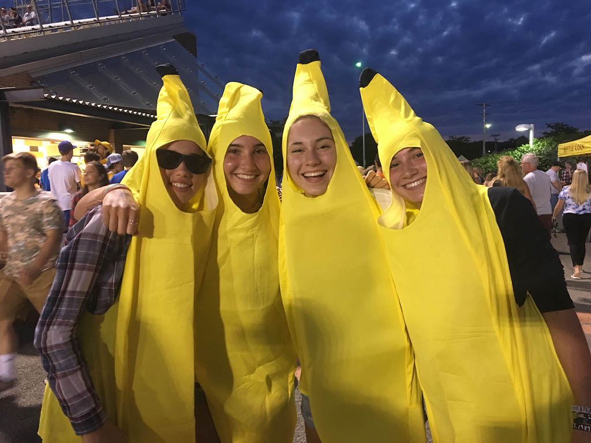
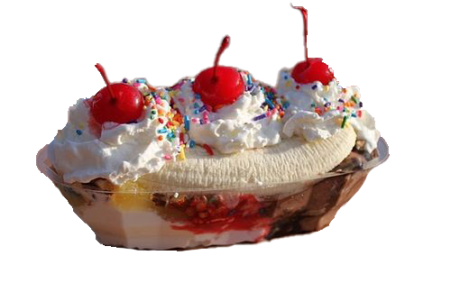
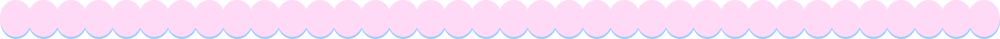
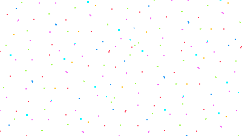
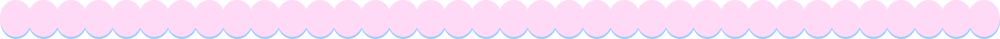
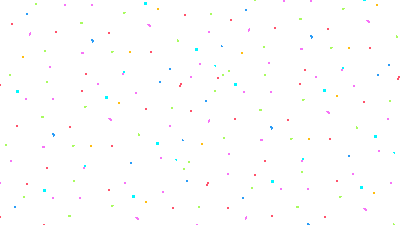

banana split
america
history
how it's made
There is debate about the origin of the banana split. Its creation is generally credited to David Strickler who is said to have made the banana split while working as a soda jerk in Latrobe, Westmoreland County, Pennsylvania (Corris). However, both Boston and Wilmington, Ohio also claim to be the birthplace of the banana split (Corris).
A traditional banana split is made by splitting a single banana and placing each half on either side of the dish. Three scoops of ice cream (typically vanilla, chocolate or strawberry) are placed in between the bananas. It is then topped with whipped cream, cherries, and nuts (Corris).
Click the logo to learn about Latrobe's annual Banana Split Festival!
Fig.1.




 


